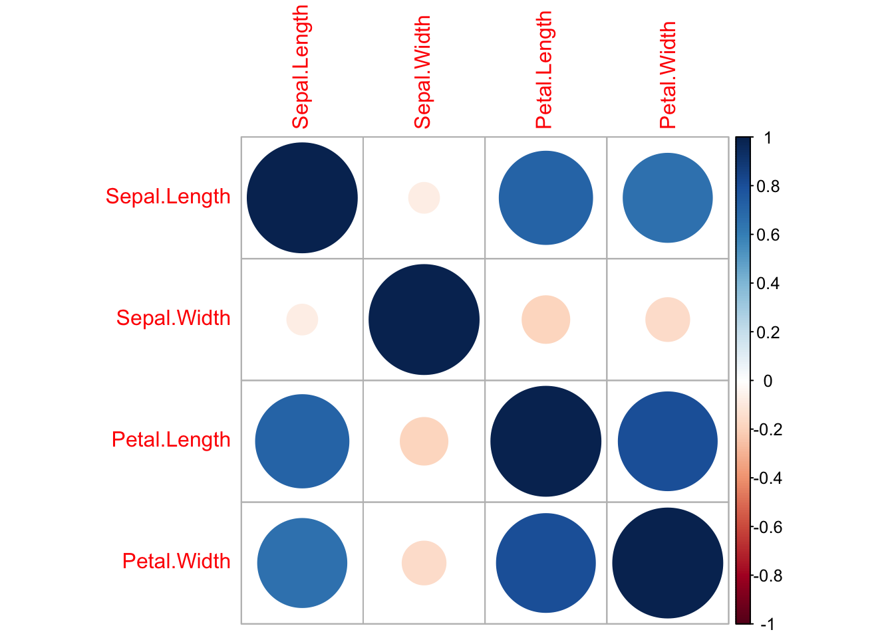

Chapter 2 Data Exploration
Data exploration is one of the most important aspects of data science and forms the cornerstone of my drills. Nonetheless, I have lots of room for improvement.
I like Hadely Wickham’s writing and find his approach exceptionally clear. Therefore, I’ll use the tidyverse.
## Warning: package 'tibble' was built under R version 3.6.22.1 Counting things. The naming of parts.
starwars %>%
filter(!is.na(species)) %>%
count(species = fct_lump(species, 5), sort = TRUE) %>%
mutate(species = fct_reorder(species, n)) %>%
ggplot(aes(species, n)) +
geom_col() + coord_flip()Figure 2.1: Starwars Figure 1
I like stacked bars for their economy, but it’s easy to over do it. Supperimposing gender onto the columns seems easy…
starwars %>%
filter(!is.na(species)) %>%
count(species = fct_lump(species, 5), gender = fct_lump(gender, 2), sort = TRUE) %>%
mutate(species = fct_reorder(species, n)) %>%
ggplot(aes(species, n, fill = gender)) +
geom_col() + coord_flip()## Warning: Factor `gender` contains implicit NA, consider using
## `forcats::fct_explicit_na`But note that I’ve got a problem: the Droids, which outnumber the Gungans, are now reordered to after the Gungans. This happens because the \(n\) that we’re counting comprises subcategories of species and gender. Only three Gungan males exist (and no females), but that is enough to tie the Droid NA category. The Droid NA category come after the Gungan category, presumably because male comes before NA, or because NA comes last (more likely).
Exploring this, I see that I’m getting warning messages about the implicit NA’s in gender. Note that the following renders a slightly different plot. I still have not fixed the order of the species.
starwars %>%
filter(!is.na(species)) %>%
count(species = fct_lump(species, 5), gender = fct_lump(gender, 2), sort = TRUE) %>%
mutate(gender = fct_explicit_na(gender),
species = fct_reorder(species, n)) %>%
ggplot(aes(species, n, fill = gender)) +
geom_col() + coord_flip()## Warning: Factor `gender` contains implicit NA, consider using
## `forcats::fct_explicit_na`
2.2 Summarize is another very useful function:
starwars %>%
filter(!(is.na(species))) %>%
group_by(species) %>%
summarize(n=n(), mean = mean(height, na.rm = TRUE)) %>%
arrange(desc(n))## # A tibble: 37 x 3
## species n mean
## <chr> <int> <dbl>
## 1 Human 35 177.
## 2 Droid 5 140
## 3 Gungan 3 209.
## 4 Kaminoan 2 221
## 5 Mirialan 2 168
## 6 Twi'lek 2 179
## 7 Wookiee 2 231
## 8 Zabrak 2 173
## 9 Aleena 1 79
## 10 Besalisk 1 198
## # … with 27 more rows2.3 Referencing other parts of the document
This is a good place to practice referencing figures. Say that I want to refer the reader back to my first starwars figure. See Figure 2.1.
I can reference other pages in a similar fashion. See Chapter 9. Note that this works by referencing a {#label} placed in the chapter title.
See Chapter 1
See Chapter 2
Note that the {#label} uses a single run-together word. It does not tolerate spaces and this cannot be overcome by ‘quoting’ it.
2.4 Referencing citations:
In order to insert citations, one needs a .bib file in the project. I’ve included one in this project as book.bib. The yml header in Chapter 1 needs to have a \(bibliography:\) and \(biblio-style:\) line added.
To insert a citation, use the citr Addin from RStudio. bookdown, for instance, is cited thusly (Xie 2020). Note that I need to figure out an adequate workflow of references. The convenience of Endnote in MS Word will not be available. Nonetheless, if I populate the book.bib and packages.bib files carefully, with .txt files generated in Endnote, I should be OK.
For instance, a recent dump of my Endnote library is in bookFromEndnote.txt. This can be opened in RStudio, and I can copy-and-paste references from the .txt file to my book.bib. For instance, if I have a breast paper that I want to cite here (Stevens and Parekh 2016), I’d copy-and-paste the reference from bookFromEndnot.text to book.bib.
Of note, Yihui Xie includes a nifty bit of code to automatically generate a bib database for R packages:
References appear automatically at the end of a chapter.
References
Stevens, T. M., and V. Parekh. 2016. “Mammary Analogue Secretory Carcinoma.” Journal Article. Arch Pathol Lab Med. 140 (9): 997–1001. doi: 10.5858/arpa.2015–0075–RS.
Xie, Yihui. 2020. Bookdown: Authoring Books and Technical Documents with R Markdown. https://CRAN.R-project.org/package=bookdown.